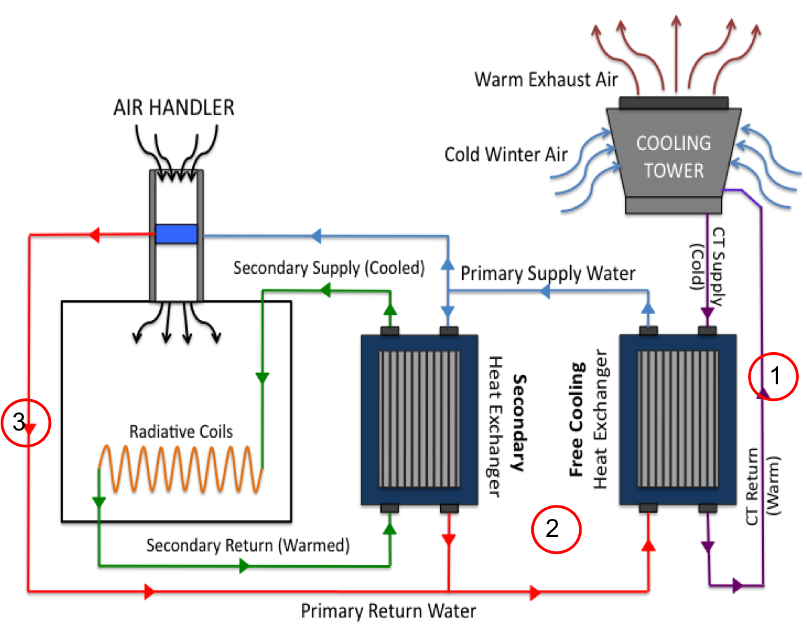

|
Cooling certain spaces of 41CS is still needed during the winter months. Spaces with high occupancy ratings or high power usage such as the computer center must be cooled even during the cold season.
Typically, spaces are cooled using two 500 ton chillers. Combined, these chillers have the same cooling capacity as 600 window A.C. units. To reduce energy costs and avoid using chillers during the winter, 41CS uses water side free cooling when cooling needs are low.
Water side free cooling utilizes the already cool water from the cooling towers located on the roof of the building and uses two heat exchangers in lieu of the two 500 ton chillers which reduces energy costs.
|

|
 Water Side Free Cooling
Water Side Free Cooling